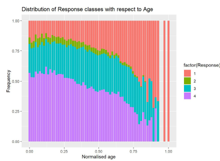
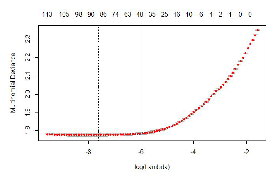
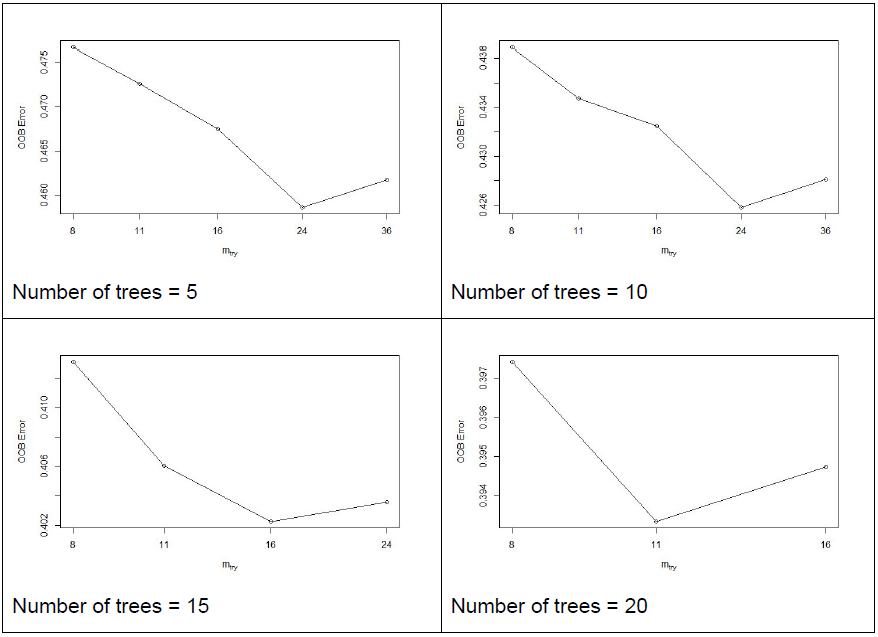
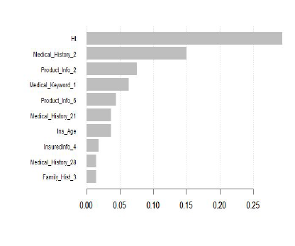
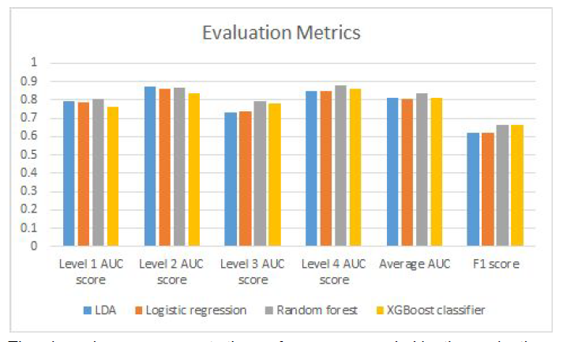

Life Insurance Risk Prediction using R
Overview
- Life insurance companies assess client risks to determine coverage and premiums.
- They use classification systems to segment clients into different risk levels.
- Risk assessment considers BMI, employment, medical history, insurance history, and family background.
- Feature selection and PCA may be needed to reduce dimensionality for predictive modeling.
DATASET DESCRIPTION
This dataset belongs to the insurance company ‘Prudential’, made available on Kaggle. The challenge here is to create predictive models to accurately classify the risks involved that could help the company quote better prices to its new and existing customers. The predicting power of the models created thereafter could help the company outline the importance of the data points in a more efficient way, enabling them to streamline the process of issuing their services. The dataset consists of 59,381 rows and 128 columns. The dataset comprises of a mixture of data types - categorical (60 fields), continuous (13 fields) and discrete (5 fields). The medical keywords are dummy variables (48 fields). The response contains 8 risk levels, which are then mapped into 4 risk levels by combining every two consecutive levels into one.
- As is represented by the bar graph above, the dataset is imperfect due to the presence of missing values, with some fields like ‘Medical_History_32’ and ‘Medical_History_10’ having more than 90% of the values were missing. Such fields would require pre-processing.
- The response variables are not equally distributed in the train data, with risk levels ‘3’ and ‘4’ (Risk level ‘2’ after mapping) only representing 1.7% and 2.4% of the whole ‘response’ column respectively. This could affect the predictive power of the models when it comes to predicting such levels on the test data (imbalanced classes).
The plot on the left represents how BMI varies with age for level 1 (high risk) clients, and the other plot represents the same for level 4 (low risk) clients. Although a substantial number of clients have their BMIs closer to 0.5, level 1 clients have a more variance in the distribution for all ages (0.25 to 0.9), and are hence classified as high risk, while level 4 clients have a smaller variance (0.25 to 0.5), and hence poses less risk to the company. Note that higher concentrations of data points are represented by lighter shades in both the plots.
The plot on the left indicates how the clients are classified into the respective levels with respect to the frequencies of different ages. Youngsters are considered to be less risky (more blue and less red), whereas older clients are more risky (less blue and more red). Hence, they are likely to be classified as a level 1 or 2 while the former as a level 3 or 4.
FEATURE ENGINEERING AND DIMENSIONALITY REDUCTION
The scope of feature engineering is limited on this dataset as most of the fields are either masked or normalised at source. However, we were able to make use of the count of 48 medical keyword features, a set of binary valued features relating to the presence/absence of a medical keyword being associated with each client (row). This is to explore whether a client who is associated with a higher number of medical keywords is more likely to be classified as “high” risk.
For reducing the dimensions, PCA was applied. It can be seen that the first 100 principal components cumulatively captures 97% of the variance. However, PCA was not found to be useful, with only a marginal improvement over what would be otherwise, and was thus disregarded.
Lasso regression was used to find the features having non-zero coefficients. Although there was no improvement in the overall performance of logistic regression model, the cost of computation was reduced by taking into account only 74 of the otherwise 123 features.
HYPER-PARAMETER TUNING ON CLASSIFICATION MODELS
Random Forest classifier
The dataset has 122 features. By default, roughly 11 features would be used at each split for making the tree. Maxnodes has also been restricted to a maximum of 20 in order to reduce the cost of computation. The number of trees used is 5,10,15 and 20. Other than manual tuning, mtry for each of these has been tuned using tuneRF() to reduce the out-of-bag error.
For instance, for 15 trees, the value of mtry that minimizes OOB error is 16.
XGBoost
By setting the maximum depth to 2 and keeping nrounds (300,500,1000) constant, the parameters gamma (0,0.50,1) and eta (0.4,0.6,0.8,1) were tuned using GridSearch.
The graph on the left is a representation of the information gain for the top 10 features that were found to be influential for making key decisions by the XGBoost classifier, after hyper-parameter tuning. It is worth noting that height and age are among these features. Lasso regression was performed and was used to model logistic regression. Although it reduced the number of features to 74 and reduced the computation, there was no significant improvement in the metrics.
Evaluation
The four models have been compared using AUC-ROC scores for each of the four levels, the average AUC score, and the F1 scores.
ROC Curves
| Model | Average AUC | F1 Score |
|---|---|---|
| LDA | 0.811 | 0.6214 |
| Logistic Regression | 0.808 | 0.6209 |
| Random Forest | 0.837 | 0.6648 |
| XGBoost | 0.810 | 0.6624 |
Random forest classifier performs the best overall with the highest AUC-ROC score (Horton, 2016). This was then followed by XGBoost. All the four models are relatively better at classifying level 2 and level 4 clients (higher AUC scores). Level 4 showed high sensitivity, probably because of a majority of the observations in the training set belonging to that level.
The above image represents the performance recorded by the evaluation metrics for each of the models.
CONCLUSION
The insights gained from EDA indicate that the insurance policies for youngsters are less risky for the companies as against to the aged people. Also, the BMI for the less risky clients lie close to the general BMI while it has a high variance in case of more risky clients. The classification models applied on the problem gave better performance for the Random Forest and xGBoost as compared to Logistic Regression and LDA. Also, the dataset was normalised at the source and during data pre-processing the feature selection using Lasso Regression and Feature scaling using min-max scaler were not found to be of much help as they were unable to enhance the performance of the models.